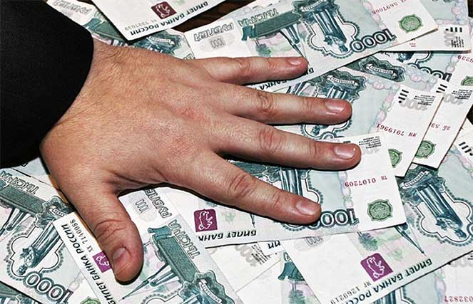
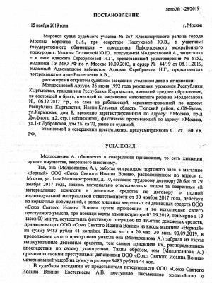
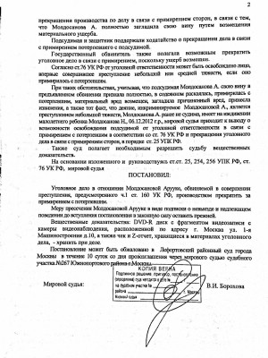

Присвоение и растрата как уголовно наказуемое деяние предусмотренное статьей 160 УК РФ.
Диспозиция статьи 160 УК РФ предполагает наступление уголовной ответственности за присвоение и растрату, то есть хищение чужого имущества, вверенного виновному.
Согласно Постановлению Пленума Верховного Суда Российской Федерации № 51 от 27 декабря 2007года «О судебной практике по делам о мошенничестве, присвоении и растрате»:
Присвоение состоит в безвозмездном, совершенном с корыстной целью, противоправном обращении лицом вверенного ему имущества в свою пользу против воли собственника.
Как растрата квалифицируются противоправные действия лица, которое в корыстных целях истратило вверенное ему имущество против воли собственника путем потребления этого имущества, его расходования или передачи другим лицам.
Объектом присвоения или растраты являются общественные отношения, складывающиеся в сфере распределения и перераспределения материальных благ.
Объективная сторона присвоения или растраты заключается в завладении чужим имуществом путем его непосредственного израсходования.
Субъект присвоения и растраты специальный-любое дееспособное лицо, достигшее 16-летнего возраста.
Субъективная сторона характеризуется прямым, как правило, конкретизированным умыслом. Растрачивая или присваивая чужое имущество, виновный осознает противоправный, безвозмездный характер своих действий.
Состав присвоения или растраты материальный, то есть присвоение считается оконченным преступлением с того момента, когда законное владение вверенным лицу имуществом стало противоправным и это лицо начало совершать действия, направленные на обращение указанного имущества в свою пользу , а растрату следует считать оконченным преступлением с момента противоправного удержания вверенного имущества.
Во всех указанных тонкостях и деталях обычный человек, не специалист, может и не разобраться. Поэтому для качественной защиты необходим адвокат по преступлениям о растрате ст. 160 УК.
Основные принципы работы адвокатов по растрате- ст.160 УК РФ
Адвокаты по уголовным делам КА "Шериев и партнеры" выполняют свои обязанности честно разумно и профессионально. Имея обширный и положительный практический опыт в защите по уголовным делам, Вашим делом займется именно том адвокат, который имеет опыт ведения дел по ст. 160 УК РФ. Наши адвокаты способны качественно защитить Ваши интересы по уголовному делу.
Адвокаты по делам о присвоении и растрате коллегии адвокатов г. Москвы "Шериев и партнеры" оказывают высококвалифицированные услуги в области защиты прав по уголовным делам по ст. 160 УК РФ.
Адвокаты Коллегии по уголовным делам о присвоении и растрате являются квалифицированными специалистами по защите именно по делам о растрате. Имеют многолетний опыт работы по уголовным делам о присвоении и растрате. Опыт общения со следственными органами, в том числе с СК РФ, по уголовным делам о растрате делает наших адвокатов по ст. 160 УК РФ специалистами именно в этой области, поэтому знают как построить защиту по тому или иному уголовному делу.
Адвокаты по преступлениям о присвоении и растрате КА «Шериев и партнеры» осуществляют защиту по уголовным делам по всем частям ст. 160 УК РФ, расследуемым следственными органами Следственного Комитета РФ. Многие из уголовных дел находящихся в производстве наших адвокатов по делам о растрате совершаются в сфере хозяйственной деятельности как юридических лиц, так и муниципальных предприятий. Наши адвокаты имеют опыт прекращения уголовных дел по ст. 160 УК РФ.
Имея положительный и обширный практический опыт в защите по уголовным делам о растрате, адвокаты по преступлениям о присвоении города Москвы максимально смогут защитить Ваши интересы по уголовным делам.
Консультация адвоката по растрате ст. 160 УК,
8 (925) 502-40-09
8 (925) 502-40-09
Защита уголовных адвокатов по другим делам. Подробнее ...
Стоимость услуг адвоката по ст. 160 УК - присвоение и растрата.
Адвокаты по делам о растрате и присвоению - ст. 160 УК.


Судебная практика по делам о растрате и присвоению - ст. 160 УК РФ.
Участвуя по уголовному делу адвокат смог добиться примирения между сторонами, в связи с чем, уголовное дело было прекращено.



